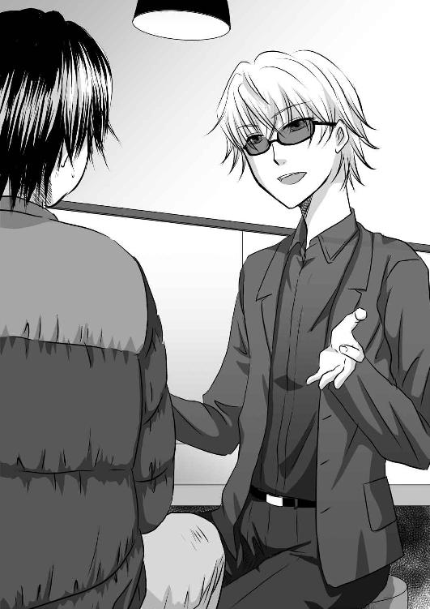
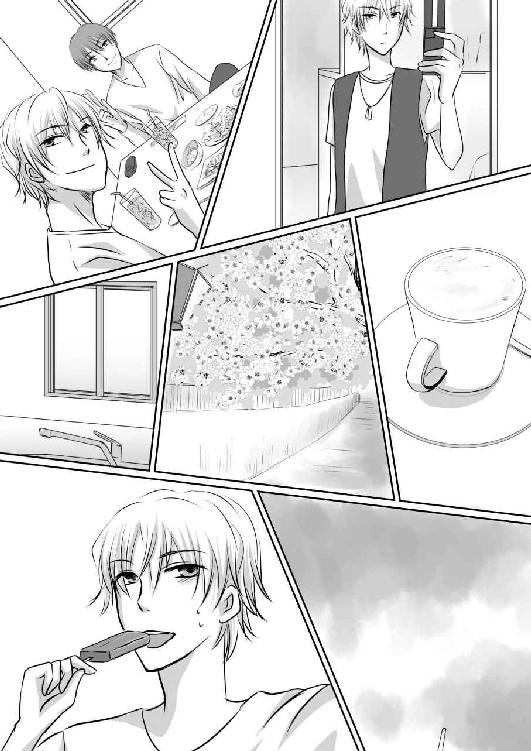

| ジャスティス (Pro-ZELO ePub MoonLovers) | |
| Pro-ZELO | |
| (2018) | |
ジャスティス
――――二〇〇七年十二月七日（金）――――
十二月の金曜日ともなると、夜の繁華街は酔客が多く、あちこちで酔っ払った者を見かける。人は酔うと声が大きくなるらしく、会話も周りの人間に筒抜けになる。最近、部長がイライラしてるなぁ、こっちまで、とばっちりにあって困っているよ。仕方がないよ、年末だからね。今期の売り上げあんまり良くないみたいだし......どこの会社も、懐具合は似たようなものだ。
山南優也は、パンパンに膨れた薄手のミリタリーコートに分厚い手を突っ込むと、内ポケットの中のイヤホンを探った。都会は雑音が多い。雑音から、音楽で身を守らなければ。やがて、優也の音楽プレイヤーは、ダイレクトに彼の耳に音楽を届ける。
彼の音楽プレイヤーは、アニメ系の音楽のみが入っている。今も、女性声優がキャラクター名のまま売り出したイメージ楽曲が流れている。
山南優也の体重は、百キロを超える。ついでに百八十センチを越える長身なので、かなりの巨漢である。ミリタリーコートと量販店で買った、ブランド名もない、微妙な丈のジーンズ。それにスニーカーというのが、彼の年間を通しての決まったスタイルだ。流石に、アニメの女の子の顔がプリントされたＴシャツを着る事はないが、両手が使えて便利ということで愛用しているリュックサックと、ウェストポーチを装備しているので、傍目にも、典型的なオタクの人という印象だった。意外に、池袋は、アニメショップが多い。その為、普段は、ほぼ引きこもりの様な生活をしている優也が、珍しく億劫そうに巨体を揺らして町歩きをしていても、違和感はない。
池袋の三角地には、沢山の『オタク系』の店が点在している。優也も、そのアニメショップからの帰りだ。と言っても、買い物目的ではなかった。
『......陵先生、今回の新作は、うちの店の専売でお願いしますよ』
アニメショップから打診があった為、話を聞きに行く事にしたのだ。何度か、メールで遣り取りはしていたが、優也の思いと、店員の思惑は微妙にずれているらしく、これ以上、メールで遣り取りする方が時間の無駄だと判断したからだ。『陵』は優也のペンネームだ。
（専売かぁ）と優也は思った。悪くない条件は出された。アニメショップといっても、自主製作の漫画や小説、ゲームなどを取り扱う店だ。厳密に言うのならば『同人ショップ』と言われる。同人ショップは、個人の作家と『委託販売』を契約している。売れたら、規定のパーセンテージのマージンをショップに支払うという契約だ。
通常、優也は『三割』がショップの利益になる契約をしていた。ところが、今回、他の同人ショップに卸さない『専売』を条件に、『二割』を提示された。しかも、委託販売ではなく、買い上げ契約。それを、一万本で提示された。
ゲームを自主製作している優也にとって、この内容は、酷く魅力的だった。お金だけの為にゲームを作っているわけではないとも思うが、優也の主な収入源が、この自主製作のゲームの売り上げである以上、利益を上げるのはまさに死活問題だ。
（けど、専売っていうのは、抵抗があるんだよなぁ。とりあえず、今日は『少し考えさせてくれ』って言ったけど......）
人波に流されるままに、大通りに出た。駅から真っ直ぐ伸びるグリーン大通りだ。丁度信号が青になる。流れから逃れるように、横断歩道を渡った。コーヒーショップが見えたからだった。時間は、二十時を少し回っている。このまま、板橋の自宅に戻っても良かったが、珍しく外出したのだから、外で夕飯を済ませようと思った。
ビジネスホテルの一階に入っているコーヒーショップは、宿泊客が多いのか、背広姿が多いように感じられたし、一人で来ている者が多い。一人の東京出張というところだろう。コーヒーショップで、カフェ・ラテと軽食を二人分、それにケーキを注文した。コーヒーショップは、どの店も大抵はセルフサービスで、自分で席まで持って行くものだが、量が多かった為か「お席にお運びしますね」と笑顔の店員に言われた。
（女の子の笑顔なんか、久しぶりに見たなぁ）と上機嫌で席に向かう。一席しか空いていなかった。カウンターだ。しかも荷物が置いてある。
「済みません、これ、荷物、よろしいですか」と声を掛けると、若い男がハッとしたように振り返って、「すみません」とそそくさと荷物をどかした。
コーヒーショップの薄暗い店内で、サングラスという妙な男だった。二十代半ばくらいの、長身で痩せ形の男だった。黒いスラックスと黒いシャツ。黒いジャケットという黒ずくめだった。
怪しい、と思うより先に、優也は（なんだ、お仲間か）と思った。オタクの中でも、痩せていて、傍目には普通の男というのも最近は増えている。動画投稿サイトで自分の顔をさらしているような、ルックスに自信のある者も居るくらいだ。黒一色のコーディネイトをするオタクも多い。さらには、男が一心不乱に読んでいるＡ４サイズの冊子。
（これ、脚本だよな......。ということは、声優さんか何かかも知れないな）
優也は判断した。そういえば、最近は、声優雑誌というのがあって、アイドルのような扱いを受ける事もある。雑誌には、ピンナップが付くし、握手会やトークイベント、ライブまである。
脚本を読みながら、男は、ぶつぶつと小さく台詞を呟いている。本人は気付いていないかも知れないが、必死の様子だったので、優也はとりあえず何も言わない事にした。こんな所で、脚本を読んでいるのは、他の客には迷惑かも知れないが、優也は、感動していたのだった。
（俺の所のゲームの脚本も、声優さん、こんな風に練習して、やってくれてるんだよなぁ）と思ったからだ。
最近の自主製作のゲームでは、声優を使うのも当たり前。オープニングやエンディングにはアニメーションが流れて、歌唱入りの音楽が付くのは当たり前という世界になっている。優也は、一応自分で音楽を作る事が出来るので、メインヒロイン役の声優に、歌まで歌って貰っている。
曲を提示してからレコーディングまで十日というような短い期間にもかかわらず、女性声優たちは、キチンと歌ってくれる。その裏には、こうした、練習の積み重ねがあるのだと、優也は思った。
「......カフェ・ラテと、パストラミハム＆チーズサンド、海老とアボガドサンド、リンゴのシブーストとベルギーワッフルのお客様ァ」
この店では、客に番号札を持たせないので、こうやって、店員が探し回る事になる。このコーヒーショップのサンドウィッチは、食パンではなく、小さなバケットに具材を挟んだ物なので、通常は一つで十分だ。それを二つにデザートまでつけているのに、飲み物一つ。つまり、一人でこれだけを食べるのだ、と店内の視線が店員に注がれた。すこし恥ずかしい気分になりながら、
「あ、僕です」と手を上げると、隣の若い男も「俺です」と手を上げていた。
思わず、顔を見合わせて、まじまじと見つめ合った。巨漢の優也なら解るが、隣の男は、痩せ形だ。こんな量を食べるのか、と優也はびっくりした。
店員が来たので、「僕より、彼の方が先に来ていたようだから」と促すと、間違いなく、トレー二つに乗った大量の食事を若い男に渡した。

「ごゆっくりどうぞー」と声を掛けて立ち去る店員と入れ替わりに、もう一人の店員が、優也の席にも同じ食事を届ける。全く同じセレクトだった。珍しいな、と優也は思った。
「すごいですね。俺と全く一緒だ」と男はサングラスを外して、笑った。思わず、見とれるほどの美形だった。鼻筋が通った整った顔だちに、テレビで見る女優のように、美しい肌をしていた。手入れが行き届いた、というようなイメージだ。皓歯という言葉がぴったりの、白く輝く歯が眩しい。
「いや、びっくりしました」と優也も言った。「俺くらいの体型なら、このくらい食べるのは普通だけど......あなた、痩せてるじゃないですか」
「はは、職業柄」と男は笑った。眩しくて、目がくらみそうだ、と優也は思った。
「職業柄......って、声優さんですか？」と優也は聞いた。
「声優は......なんどかやった事がありますけど。本業は俳優です。明日から、この近くで二週間舞台やるんです。今日はゲネプロだったので」
なるほど、と優也は思った。脚本イコールアニメ脚本と思い込んでいた自分が恥ずかしくなった。舞台や、ドラマというのは、全く考えられなかったのだ。俳優、と言うのも納得出来る。とにかく、美形だ。男の優也が見とれるほどの美形だった。
（これ、美形オーラだよ。俺には無いものだ......）と優也は思った。
「これ、良かったら、チラシです。当日券ありますんで、見に来て下さい」
すかさずチラシを差し出された。池袋は、劇場が多い。東京芸術劇場を初めとして、アウル・スポット、シアター・グリーンなど大小様々な劇場がある。男の出る劇場は、百人規模の小さな劇場だった。Ａ４サイズのチラシには、衣装を着た、目の前の男の写真が掲載されていた。
「桜井時生......さんというんですか？」と優也は聞いた。『エクソダスの桜井時生、主演！』とデカデカと書かれている。男―――桜井は「はい。あなたは？」と聞きながら、パストラミ＆チーズサンドを頬張った。
優也は、自分も何か名乗った方が良いのか、と思った。今、優也の手にしている、同人ショップの紙バックには、冬に発売予定の新作ゲームのチラシが入っている。
（しかし、俳優さんに『十八禁変身魔女ッ子アイドルもの』のエロゲームのチラシを渡すわけには行くまい）と優也は思いとどまった。しかも、今回は初回予約限定で、フィギュア付というとんでもない代物だ。
「僕は、山南優也といいます。いつもは自宅で仕事をしてるので、殆ど外には出ないのですが、今日は、仕事の打ち合わせで......」
「自宅で仕事なんて凄いですねぇ。作家さんみたいだ。あ、さっき、声優さんと言ってましたけど、アニメ関係とかですか？ お仕事」
いよいよ困り果てた優也は、「仕事と言っても、趣味みたいなもので......」と曖昧に濁してみた。さりげなく、紙袋を桜井から遠ざけると、その挙動が桜井には不審に移ったらしく、ひょいっと、紙袋を奪って、中を確認されてしまった。
「......ゲーム......？ うわー、凄いですね。ゲーム作ってるんだ！ チラシ、一枚貰います。コミケって最近、良く聞きますよね。なんか、楽しそう。俺も行ってみようかなぁ」
「や、止めてくれっ！ 一般人が増えるのは、オタクにとっては、マイナスなんだ。ただでさえ、なんか、条例とかいろいろあって、好きな活動はしにくくなってるんだ。第一、ゲームや漫画やアニメに影響される犯罪が起きるなんててことは少ないはずだ！ ......いや、論点がずれたが、とにかく、一般人が、コミケに来るのは、止めた方が良い。というか、本当に止めてくれ」
必死に力説する優也に、「あ、そうですか。ちょっと残念だなー」と桜井は引き下がった。あっさりしたものだ。興味本位なら、こんなもんだろう、と優也は思った。額に滲んだ妙な汗をペーパーナプキンで拭う。
「でも、俺も、犯罪とアニメとかって結びつかないと思いますよ」と桜井は言った。どういうことかと思った優也が黙って聞いていると、
「だって、そういうことばっかり考えてる人間が、犯罪に走るって言うなら、推理小説家なんか、何十人も殺してるってことになるし、時代小説家は辻斬りでもしなきゃならないですよ。なんてったって、一番、人を殺す事を考えて生活してるの、この辺の人じゃないかって思いますからね」
「たしかに！ なんか、レイプモノが多いとか、ロリコンがどうだの、いろいろ言われてますがね。二次元で慣れた僕らは、三次元の女は、怖くて勃たないんですよ！ 現実の女は本当に怖い！」
妙な意気投合をした二人は、そのまま、コーヒーショップの閉店時間まで話し込んでしまい、「必ず、舞台見に行くよ！」と約束までしてしまった。店を出た後、桜井は「俺は、もう一回、劇場の周りを回ってから帰る」と言ったので、優也は一人で駅に向かった。
優也が住んでいるのは板橋なので、池袋からは埼京線ですぐだ。二十一時四十分の池袋駅は、まだ、人でごった返している。特に年末の声が聞こえ始めた金曜日であるから、酔客が酷い。ホームの柱に手を突いて戻しているものも居る。
「まもなく、埼京線列車が参ります！ 危ないですから後ろに下がって下さい！」
メガホンを持った駅職員が対応しているが、雑音にかき消されて良く聞こえない。金切り声の駅職員の声と、電車の入ってくる轟音。それに、金属が擦れる甲高い異音と、けたたましい警笛が響いた。
「なんだ？」
優也はホームに向かって進入してくる埼京線の車体を見た。運転士までは遠く離れているはずだが、優也にはその顔が、よく見えた。必死の形相で、ブレーキを掛け、警笛を鳴らし続けているのがよく解った。なんだろう、と思っていると、女性の悲鳴が聞こえた。裂帛のような声が、幾重にも重なる。
「にーちゃん、逃げろ！」
今まで酔っ払っていた中年男が、青ざめた顔で叫んでいたが、とすん、と妙に軽い音を残して、一瞬、耳が痛くなるほどの静寂が訪れた。
けれど、静寂はほんの一瞬の事だった。
すぐさま、悲鳴と怒号。駅職員達が、「指令に連絡ッ！ それと、救急車だ！」と叫んで、次々とホームから線路に降りる。
「大丈夫ですか！」
一応、マニュアル通りに駅員は声を掛けた。車体にはじき飛ばされ、血が飛び散り、四肢が散乱していた。どう見ても、大丈夫という状況ではない。
（ああ......そうか。たしか......、死亡宣告は、医者にしかできないからな......遺体の回収じゃなくて、お客様の救出なんだよな、この人達......）
慣れた職員達が、お客様の救出の為に、とホームから出て行くように指示した。優也もそれに従った。お客様の早い救出は、鉄道会社にとって急務だった。なにせ、金曜日の二十二時間際。ベッドタウンである埼玉方面の運行を取りやめにするわけにはいかないのだ。
一刻も早い運行再開を目指さなければならないのだろう。
と、その時、優也は意外な声を聞いた。
「今の動画で撮ってたから、動画サイトに投稿しよっと」
「テレビ局とかに売った方がいいんじゃない？」
「......だって、ただの会社員って感じだったし。有名人の飛び込みだったら高く売れそうだけどさぁ」
ケラケラと笑いながら、そんな話をしている二十代前半くらいの男達に、優也は無性に腹が立った。あの瞬間、『逃げろ』と叫ぶのでもなく『これ、動画で撮って、動画サイトにアップしたら注目浴びるんじゃね？』というどうでも良いような理由で、カメラを向けていた人間が居ると言う事だ。
「すげー、良くとれてんじゃん。手とか千切れてるし迫力あるわー」
別な男も自分の撮った動画を見て、一人で感心している。
気分が悪くなって、優也は駅に出てタクシーを拾って帰る事にした。信じられないと、優也は思った。携帯電話のカメラ機能など、遊びの道具だ。それが、こんな事にしか使われないのならば、いっそ、カメラ機能など無ければいいのにと優也は、一人で憤る。
（にーちゃんって怒鳴られてたから、若い男の人だったんだろうな）
優也の位置からでは、良く解らなかった。死体を直接見なかった事も、良かったと思っている。しかし、同じ場所に偶然居合わせてしまったものとして、冥福くらいは祈ろうかと、駅を振り返ってから、一つ、黙礼を捧げた。
駅前のタクシーの運転手に「板橋駅まで」と告げて、暫くすると、タクシーの運転手が「今、池袋の駅で身投げがあったらしいですねぇ」と声を掛けてきた。
「ああ、そうですね」と適当に受け答えていたが、妙に情報が早いな、と優也は不思議な気持ちになった。
「やっぱり。迷惑ですよねェ。それで、板橋までタクシーになっちゃったんでしょ？ こっちは助かりますけどねぇ。
お客さん。......たしか、身投げ、埼京線って言ってましたから」
タクシーの運転手は、ははは、と笑った。正直、この話題をこれ以上続ける気は無かったが、情報の早さが気になった。
「運転手さん、情報早いですね。ニュース速報でも流れたの？」
「ハハハ、今時は、２ちゃんねるですよ！ ありとあらゆる情報が早くて助かりますよ」
なるほど、と優也は思った。優也も、２ちゃんねるは使っているが、確かに、情報は早い。優也が新作ゲームの情報を投稿すると、あっという間に情報が拡散する。良い情報も、悪い情報も―――デマでさえ、広まるのは、あっという間だ。
最初の内は、おもしろがって宣伝スレッドやエロゲーム系の雑談スレッドに色々と書き込んでいたが、今では、怖くなって、書き込むことは稀になっている。
（あれは、善し悪しなんだよな）と優也は思う。２ちゃんねるのおかけで、助かる事も沢山あるだろう。だが、２ちゃんねるのせいで、苦しむ人間も同様に多いはずだ。
（......そうだ、まずは、明日の桜井さんの舞台をネット予約とってしまおう）
優也は鞄の中から、携帯電話と桜井の出演する舞台のチラシを取りだした。ＱＲコードを読み込めば、ボタン一つでチケット予約画面にたどり着く事が出来る。
（うん、明日の十二月八日はチケット取れるな）
予約を済ませ、優也はメールの確認をした。何件かメールが来ている。同人ショップからのメール、雑誌社からは取材の申し込みと、来月初旬に発売する、雑誌記事の確認催促のメール、女性声優からのスケジュール連絡。
（なんだこれ）
優也はいぶかしんだ。差出人は『浅岡まひる』というアマチュアの女性声優だ。冬に発売する、新作ゲームのヒロイン役の声優だった。タイトルは『間違って転送しちゃいました』と『FW:聖戦の始まりです→幕は切って落とされた』という二通だった。
（おそらく、聖戦なんとかを間違って転送したんだな）と思ったが、内容が気になった。なんとも、ゲームのようなタイトルだと思ったからだ。
『大脱出の為に集いし者達へ
幕は切って落とされた。
二〇〇七年十二月七日二十一時四十五分、聖戦は始まった。
我らの聖地を取り戻す為に戦いを！』
意味不明な文言だが、なんとなく、気になった。時計を見る。二十二時ジャスト。二十一時四十五分といったら、ほんの十五分前だ。
（俺は池袋の駅にいたなぁ）とぼんやり思った優也だが、（その時間じゃないか？）と考えて、ぞわっと鳥肌が立つのを感じた。
その時間、池袋駅で、人が一人死んでいる。
板橋の自宅は、古びた一軒家だ。
高度成長期に建てられた、所謂狭小住宅だが、一人暮らしの優也には丁度良いくらいの家だった。東京の住宅地らしく、窓から手を伸ばせば隣家に手が届くほど近い。だが、駅からゆっくり歩いて十分程度という好物件だった。築年が古い為に多少、オンボロ屋敷の感はあるが、メンテナンスしながら住めば問題ない範囲だったし、目は瞑る事が出来る範囲だ。その他には、近所に駐車場を借りて車を置いている。
部屋は、物が多いが綺麗に片付けられている。一階は殆ど在庫や資料などが置いてある。二階の部屋が、優也の寝室と作業部屋だ。作業部屋に戻り、優也はＰＣを起動させた。
（今日は、結構時間を使ってしまったからな。少し頑張らないと）
スケジュールを確認する。工程上、今日・明日中にはシナリオを終わりにしなければならないが、まだ、シナリオは八割程度しか完成していない。
通常は『サークル』と言って、何人かの同志が集まって、ゲームを作るのだが、優也は一人で作っている。元々、ＳＥだったのでプログラムはお手の物だったし、シナリオは好きで書いているので問題ない。誰かに絵をお願いするような作業の余裕が組めなかった為、自分で勉強をして書くようになった。流石に、声までは自分で出来ないので、ネットで見つけた女性声優に頼んで、声を入れて貰っている。
（シナリオがあがらにゃ、声優さん達に迷惑掛かるし）
何より、スタジオを押さえている都合もある。死んでも今日明日中に上げなければならない。しかも、明日は、池袋で観劇だ。
「今日は徹夜だな」と優也は諦めたように溜息を吐いて、眠気に効果があるという栄養ドリンクを飲み干した。
優也は、シナリオを書く時は、動画投稿サイトを見ながら書く事が多い。一人で部屋の中で頑張っていると、切ない気分になってくるのだ。世界でたった一人きりになったような気分になるというのだから、重傷だ。その点、優也の通い詰めている動画投稿サイトでは、リアルタイムに誰かがコメントを投稿するので、とりあえず安心できる。
暫く作業は順調だった。今日は、久しぶりに人と談笑をしたのが良い気分転換になっているようだった。おかげで集中力が続いて、携帯電話のメールが着信を告げるまで、一心不乱にシナリオを書いていた事になる。
「うわ、三時間頑張ってたか。凄いな」
大きく伸びをすると、同じ姿勢をとり続けて固まっていた関節が、ポキポキと派手な音を立てた。水分も全く採っていなかったから、喉も渇いている。コーヒーメーカーのコーヒーは三時間も経っている為、少し煮詰まってしまった気もするが、温かいコーヒーは気分がスッキリする。お気に入りの、アニメヒロインのマグカップを使っているので、それだけで気力が漲ってくる。
メールを確認すると、声優の浅岡まひるからだった。
『遅くに済みません。きっと陵さん、まだ作業してるかなと思ってメールしました。シナリオはレコーディング前には読んでおきたいのですが、無理そうですか？ 急かしちゃって済みません。出来れば早めにお願いします！
追伸。修羅場頑張って下さいね！』
要は、シナリオの催促だ。浅岡まひるは、良い子だ。十八禁のエロゲームの声優なので、台詞は、セクシーな喘ぎ声が殆どだ。卑猥な台詞もたんまりある。勿論、ゲームなので、優也はストーリーにもこだわりを持っているが、その優也のこだわりを理解して、出来るだけヒロインの気持ちで歌いたいと言ってくれるのだ。
『ありがとう。シナリオは鋭意制作中です。近日中に必ずメールと宅配便で送ります』と返信しながら、優也はコーヒーショップで見かけた桜井の姿を思い出した。桜井は、一心不乱にシナリオを読み込んでいた。きっと、ああやって、自宅で何度も、浅岡まひるも台詞を練習してくれるのだろう。
ちらり、と優也はＰＣを見た。桜井を、ちょっとネットで調べてみようと思ったのだった。『桜井時生』で検索を掛けると、すぐに、タレント名鑑のデータや、公式ホームページに公式ブログなどが列挙された。
「あれ？ なんだこれ」
と優也は思わず声を出していた。検索サイトでは、検索候補を表示する機能がある。『桜井時生』は『桜井時生 降板』『桜井時生 脱退』『桜井時生 移籍』『桜井時生 宮木玲一』『桜井時生 早乙女健吾』という様な単語で検索されている事が解った。脱退だの降板だの、あまり良くない噂がつきまとっているようだ、とは推測できる。とりあえず、優也は、桜井時生の公式ブログを閲覧する事にした。
『十二月七日
みんなこんにちわ。今日は、ゲネプロだったよ。明日からの舞台は、俺にとって初のエクソダス以外の仕事です。是非、楽しんで貰いたいです。
ところで、ゲネプロの帰りに、晩ご飯を食べていたら、隣の男の人が、全く同じメニューを頼んでました。凄い量だったのに、二人でびっくりして、意気投合しちゃったので、友達になりました。舞台も見に来てくれるって約束したんだ！ みんなも、明日劇場で会おうね！』
びっくりした。確かに、意気投合したし、勢い余って友達だ！ などと言った気もするが、ブログに公開されているとは思わなかったのだ。ちょっと、コメントでも投稿してみようかな、と思い、コメント欄を見てみると、コメント数一万という異常な数になっている事に気がついた。
「うわ、すげー......人気あるんだなぁ......」と思ったが、良く見てみると投稿されたコメントが、なにやら、妙だった。
『友達って誰ですか？ もしかして、Ｍ君ですか？』
『脱退なんて許さない』
『なんで、私たちを裏切るの？』
『明日の舞台、楽しみにしていて下さい。何が起こるか。（笑）』
『しんじています。今日はぐっすり
ねて休んでください。』
『Ｍみたいな、嫌な奴に、降板させられたって本当ですか？ 私、今から、聖戦に参加してきます。私が、時生くんの居場所を守るから！』
『私も聖戦に参加してきます。私は、いつまでも、時生くんの味方だよ☆』
ぞっとした。こんな調子のコメントが、おそらく一万件続いて居るのだろう。信じています、というのも、頭文字だけを読めば『しね』になる。これは、ブログ炎上だ。
「......脱退、降板......Ｍ君、聖戦......なんだこりゃ」
と思わず呆れ半分に呟いた優也だが、なにか、ぎくり、とした。浅岡まひるの誤転送メール。あそこにも、ハッキリと、聖戦、と書かれていたではないか。
「聖戦......で、なにか出るか？」
とりあえず、検索を掛けてみるが、それらしいものは出てこない。携帯電話を取りだして、優也は浅岡まひるに電話を掛けてみた。深夜二時。非常識な時間だが、まひるは起きているかも知れない、と思ったのだった。
「あー。陵です。夜分に済みません。ちょっと相談したい事があって」
優也は切り出した。まひるは『全然大丈夫ですよー』と明るく言う。大体の、オタクは、男女ともに深夜に強い。
優也は、「いま、丁度レイプルートのクライマックスのシーン書いてるんだけど」とチラリ、とＰＣを見た。言っている事に、嘘はない。
「浅岡さんなら、彼氏の前でレイプされるのと、何十人の男達に輪姦されるの、どっちが絶望を感じるかなぁ。ちょっと、シチュエーション的に、迷っていてね......あ、この場合の彼氏は、プレイヤーね」
セクハラまがいのとんでもない質問だな、と優也は思った。こんな質問を、堂々と女性に出来るくせに、優也自身は、女性経験が無い。優也にとって、セックスは想像の世界の物なのだ。暫く、電話の向こうの応答はなかったが、『現実だったら、』と浅岡まひるが切り出してきたので、優也はいささかほっとした。今のヒロイン、桃瀬花音は浅岡まひるの鼻に掛かったような甘いロリ声に合わせて作ったキャラだった。いま、降板されるのは、とても困る。
『現実だったら、彼氏の前でレイプされたら、死んじゃうとおもうけど......ゲームだったら......っていうか、プレイヤーさんは、全部見てるじゃないですか。それなら、プレイヤーさんは、ヒロインが何十人の男にヤられちゃうほうが、ショックなんじゃないですか？』
と、浅岡まひるは至極冷静に答えた。「あー確かに」と優也は同意した。
「実は、レイプルートに乗る為には、それまで、手を握った事しかないって言う状態が条件なんだ」
『じゃあ、大事にしてきた彼女の純潔を、大勢の男に無遠慮に奪われるって事ですね。うんうん、なんか、相変わらず、鬼畜な事考えますねー』
あまり嬉しくない褒め言葉に、「はは」と笑いながら、優也はメモを取った。メモを取りながら「そういえばさー」と何気なく切り出す。「浅岡さん、桜井時生好きなの？」
『えっ？ なんで解ったんですかー？ 私、ブログにも書いてないのに』
「あ、そうだったんだ。ほら、聖戦参加のメール来てたからさー」
『......陵さんも、参加するんですか？』
いささか、固い声で浅岡は言った。優也を探るような気配だ。
「まあ、俺も、桜井時生好きなんだよ。男のくせにヘンだって思うかも知れないけどさ。一応、明日の舞台のチケットも持ってるし」
言いながら、優也はネットで『エクソダス』を検索した。すぐに出てきた。男性十二人組の演劇ユニット。過去五年での公演回数は四百五十公演。動員は合計三十万人。来年三月には、エクソダス専用劇場がオープンする予定。
（なるほど、ここから脱退するという話が出ているんだな）
そして、それは正しいだろうと思った。何故か、ネットでの話題は、真実である事が多い。理由は簡単だ、情報ソースが内部漏洩だからだ。
「俺も......、桜井時生がエクソダスから脱退するのは反対なんだけど、やっぱり、舞台は観に行きたくてさ......」
優也は適当な言葉で、浅岡の反応を待った。
『私も！ そう思うんです。他の演劇をやりたいって言うなら、それで良いんですけど、なんで、エクソダスを辞めなきゃならないんだって！ ......私は、それが納得出来ないんです』
浅岡まひるは、電話の向こうで号泣し始めた。
「ねぇ......浅岡さん」と優也は語りかけた。
「僕みたいなオタク男が、桜井時生の為に何が出来るかなんて解らないけど、聖戦の行方を見守りたいんだ。でも、僕は、聖戦の参加方法がよく解らない。浅岡さん、教えてくれないかな」
電話の向こうで、ズーッと鼻をすすり上げる音が聞こえた。
『陵さん、本気で桜井時生が好きなんですね。良いです、教えます。私の転送したメールの下の方に、たぶん、聖戦のサイトアドレスが書いてあると思います。そこにアクセスしてみて下さい』
「わかった、夜遅くにゴメンね。あと......シナリオ頑張るから、もう少し、時間下さい」
『あはは、わかりました。じゃあ、頑張って下さいね』
電話を切った後、優也はすぐさま、誤転送されたメールを開いた。確かに、下の方に、サイトアドレスがあった。ちゃんと確認すれば良かった、と優也は思った。浅岡まひるに教えられたとおりに、サイトにアクセスしてみると、パスワード入力画面が現れた。真のファンならば、パスワードはわかるというのだろう。ヒントは何一つ書かれていない。英語と数字一部の記号。これが、パスワードとして使える文字だろう。
そして、ファン以外の誰かが容易には書かないようなものだ。流石に、浅岡まひるに聞くわけにも行かない、と思った優也は、桜井時生のプロフィールを調べる事にした。
『桜井時生二十五歳。福島県郡山市出身。
人気演劇集団エクソダスではリーダー的な立場となっている。エクソダスは公演ＤＶＤの発売を行わないが、桜井時生のソロアルバム『INVOKE -/165248』にのみ、ショート版に編集された『Ｂ．Ｏ．Ｗ』のＤＶＤがつけられた。』
「まさか、こんなに簡単なのがパスワードじゃないだろうな」
ブツブツと言いながら、『INVOKE-/165248』を入力すると、認証は成功したらしく、piという電子音を響かせて、サイトが表示された。
『大脱出の聖地を取り戻す為の聖戦』と大々的に書かれたサイトの『聖戦』のあらましは、こうだった。
桜井時生は、後輩である宮木玲一を売り出す為に、我々ファンを裏切り、大脱出から脱退する事になった。宮木の母親は、世界的なプリマドンナ・宮木綾であり、桜井時生は逆らう事が出来なかったらしい。
宮木はエクソダスには相応しくない存在である。ゆえに、宮木を排除し、われらの聖地に桜井時生を奪還しよう！ その為の聖戦である。
なんとも、勇ましい檄文だ、と優也は苦笑した。だが、その苦笑が凍り付いたのは、『戦歴』の最新情報を見た瞬間だった。
『七日二十一時四十五分 埼京線にて作戦決行』
「おいおい......待てよ、これ......。これって......アレだろ......あの時の人身事故だろ？」
優也は背筋がゾクリ、と震えるのが解った。「誰が死んだんだよ......」掠れた声が、口から漏れた。あの時、駅のホームでは『にーちゃん』と言われて居た。ということは、若い男だ。若い男が死んだのだ。―――否、おそらくは殺された。このサイトに集まっている誰かに、殺された......。
優也は、なにか、情報はないか、と思い今日の人身事故について調べてみた。ニュースサイトに情報が上がっていたので、すぐに解った。死んだのは、芸能プロダクションに勤務するマネージャーの男だという。名前は、斉藤潔。そのニュースでは、どんなタレントのマネジメントを担当していたか解らなかったが、検索して調べていくと、ぞっとするような事が解った。
「......斉藤潔氏、若手の男性アイドルを数名担当。梨木祐二、手塚総一郎、柏木拓、.........宮木玲一......。宮木玲一のマネージャーだと......？」
あのサイトに書かれた時間に、宮木玲一のマネージャーは殺された。あの檄文通りだとすると、宮木玲一を引きずり落とし、そして桜井時生を元通りに戻す為に、どんな手段でも使う予定だろう。
専用掲示板には、『拡散希望』という文字が躍った。『宮木玲一の彼女と路チュー写真』『宮木玲一の飲酒写真』『宮木玲一の喫煙写真』『宮木玲一の深夜夜遊び写真』......投稿された写真は殆どが隠し撮りだ。動画まである。写真を投稿した人物は、『このような社会のルールを遵守できない人間が、公の場所に出て良いはずがありません。私たちは、このような人間を、許す事は出来ません』と自分たちの行動の正当性をことさら強調している。それに対するコメントは、『私も同意見です。これを、可能な限り、マスコミなどに訴えていきましょう』『エクソダスの事務局にも訴えましょう。私たちの小さな力を合わせて、大きなものを変えていきましょう』などと同意するコメントばかりが投稿されている。ここで、なにか別の意見を言えば、きっとそのものが総攻撃されるだろう。
「......おっかねェなあ......」とぽつり、と優也は呟いた。この事態を、桜井時生は知っているのだろうか。警察などには、この情報は通報されていないのだろうか。
優也は、桜井時生に連絡をつけたいと思ったが、桜井時生とは電話番号もメールアドレスも遣り取りしていない。ブログのコメント欄はもの凄い勢いで増え続けている為、あそこに何か書いても、きっと気付いて貰えないだろう。
寧ろ、心配なのは宮木玲一の身辺かも知れない。殺されたのは、マネージャーだ。本人を叩く準備も着実に進んでいる。飲酒や喫煙がどれほど真実か解らないが、『この状況ならば本人も飲酒喫煙しているのでは』という写真は、先ほど、投稿されていた。つまり、現場を押さえた写真は一枚も上がっていない。
それで止まるならば良いが、それ以上の事も考えられる。
『八日六時三十分 埼玉県朝霞市Ｍバレエスタジオ』
その書き込みを見た瞬間、優也は咄嗟に（止めなくては！）と思った。
Ｍバレエスタジオ。間違いなく、宮木玲一の母親である宮木綾が代表を務めるバレエスタジオだろう。
「......どうする？ そ、そうだ。ホームページくらいあるんじゃないか？」
それならば、電話を掛ける事くらい出来る。検索で、すぐに『宮木加奈子バレエスタジオ』が出てきた。加奈子は宮木綾の母親。玲一にとっては祖母に当たる人らしい。しかし、悪戯電話などを警戒してか、連絡先はメールのみ。
仕方がないので、１０４に電話を掛けた。対応してくれた機械の音声が、電話番号を教える。現在時刻、三時半。非常識な時間だとは解っていたが、非常事態だ、と割り切った。電話を掛けるが、呼び出し音が無情にも流れ続ける。バレエスタジオと自宅は、別回線の電話を引いているのだろう。そうなると、お手上げだ。
「落ち着け、俺。......思い出せ、なにか、方法があるはずだ......」
言い聞かせるように呟いて、優也は深呼吸をした。一度、二度、三度......。呼吸を繰り返していくと、気分が大分落ち着いていくのが解った。落ち着いたところで、もう一度『思い出せ』と念じた。きっと、なにか、もっと、単純な方法がある。
「あ！」と優也は手を叩いた。確かに。もっとも単純な方法。「警察だ！」
まさか、自分が１１０番通報をすることになろうとは、と不思議な気持ちになりながら、優也は電話を掛けた。念の為、とＩＣレコーダーもオンにした。
『はい、１１０番です』と機械のような声が答えた。
「済みません。ネットの掲示板で、埼玉県の朝霞市にある宮木加奈子バレエスクールに、今日の朝六時三十分、なにか危害を加えるという書き込みを見ました。それで、宮木加奈子バレエスクールに連絡を取ってみたのですが、この時間なので電話が繋がりませんでした。その掲示板というのが、昨日の池袋駅で起きた、男性の転落死にも絡んでいるというので、通報しました。亡くなった男性は、宮木加奈子バレエスクールのお孫さんで、タレントをしている玲一さんのマネージャーだと言う事で、とても、狂言には思えません」
早口でまくし立てるように言う優也に、電話の声はあくまでも冷淡だった。
『詳しくお伺いしてよろしいですか？ 通報の場合は、お名前とご住所を伺う事になっています。......あなたのお名前は？』
「山南優也。住まいは東京都板橋区......」
住所を告げながら、まるで、犯罪者になったような気分だ、と優也は思った。これで、悪戯の通報が減るのかも知れないが、『ちょっとした善意の勇気』は、くじけてしまうだろう。
『それではお伺いしますが、インターネットの掲示板ですね。確認しますのでサイトのアドレスを教えて下さい』
『埼玉県朝霞市の宮木加奈子バレエスクールに対する、犯罪予告の内容は書いていませんか？』
言われて、サイトを確認するが、特に何も書かれていない。
『これだけでは、ちょっと動く事は難しいですね......』とオペレーターは溜息混じりに言う。池袋駅の出来事と、このサイトの犯行予告とはあくまでも『素人の憶測』だということだった。（畜生）と思いながら、優也は最後に捨て台詞だけを吐いた。
「いまの遣り取り、録音させて貰ってるから。なにかあったら、アンタが責任取ってくれ」
埒のあかない遣り取りを繰り返している場合ではない、と優也は思った。バレエ。バレエ......なにかないか......と、今回ゲームに登場するキャラクターに、バレエが得意な女の子という設定があるキャラクターを思い出した。
「......たしか、声優さんに合わせて作ったんだから......、篠崎絵里奈ちゃん、バレエやってる！ たしか、埼玉だ！」
祈るような気持ちで篠崎絵里奈に電話を掛けると、妙に、うっとりした声で応対が返ってきた。寝とぼけているらしい。
『......あ、陵さん、こんにちはぁ』
「あ、ゴメンねーこんな時間に。篠崎さん、バレエやってたって言ってたでしょ。宮木綾さんのケータイとか緊急の連絡先、知らない？ 知ってたら、教えて欲しいんだけど」
済まない、と思いながら優也は強引に話を進めた。
『んー、あ、知ってます。メールで転送すれば良いですか？』
「有り難う！」
優也は電話を切って、とにかく、篠崎絵里奈からのメールを待った。メールは程なく届き、携帯電話の番号がぽつんと書かれていた。それだけだが、ありがたい、と涙が出そうになった。
早速、電話を掛ける。出てくれますように、と優也は手を合わせた。コール五回で、『もしもし、綾ですけど』と低めの落ち着いた女性の声が、電話に応じた。
「こんな時間に済みません。緊急事態なので電話させて頂きました。......僕は板橋に住む山南と言います。今日の朝六時半に、バレエスタジオの方に、危害を加えるという犯行予告が、ネットに出ています。警察にも通報しましたが、相手にして貰えませんでした」
『なんですって。えーと、ヤマナミさん？ すこし、詳しくお話ししてちょうだい』
「はい」と優也は頷いた。そして、気を落ち着かせてから、ゆっくりと続けた。「昨日の夜二十二時近く、玲一さんのマネージャーさんが埼京線のホームに転落して亡くなりました。あとで知りましたが、それも、今、宮木加奈子バレエスクールに犯行予告を出している人たちの仕業だという事です。ネットの犯行予告時間は、六時半です」
『......玲一が、レッスンに出る時間だわ』と宮木綾は呟いた。『狙われているのは、玲一とマネージャーだけなのかしら？』
「えーと......」とサイトを流し見していくと「......いえ、玲一さんの身の回りの人たちが対象です。
『お前がエクソダスに入るならば、お前の身の回りの人間は次々と不幸になる』
という恐ろしい文句が書かれていますね......あ、宮木さん。バレエスタジオ、おそらく、お手製爆弾を持って行くようです。爆弾作成サイトのリンクが張られてます」
ここまで言って、優也は、宮木綾が果たして信じてくれるのかどうか、心配になった。いきなり早朝に見知らぬ電話が掛かってきたと思ったら、急に、『狙われています』というのだから、信じろという方が無理な話だ。もし、なにもなければそれで良いのだが、少なくとも、一人死んでいるのだ。
『......ヤマナミさんでしたかしら。一応、警備会社の方に連絡してみます。玲一にも、身の回りには気をつけるように言っておきます』
「ありがとうございます！」
勢いよく優也は頭を下げた。とりあえず、これで、宮木加奈子バレエスクールは何とかなっただろう。ふぅ、と一つ吐息したところで、急に、がっくりと疲れが来た。掲示板は、相変わらず宮木玲一への呪詛が延々と綴られている。
（そんなに宮木玲一が嫌ならば、観に行かなきゃ良いのに）
不意にそう思ったので、掲示板に書き込んでみた。すると、即座に返信が来る。
『何言ってんの？ 桜井時生を見たいから頑張ってるんじゃん』
『あの場所は、エクソダスは、私たちにとって大切な場所なんだよ？ そこを守ろうとしてるだけじゃん。悪いのは、横から入り込んできた宮木玲一でしょう？』
『大丈夫。私たちは正義の為に戦っているから。きっと、戦いは正義が勝つんです』
その一文を見た時、優也は『狂っている』と思った。そして同時に（何が正義だ）と烈しい憤りを覚えた。こんなものが正義か！ 人が一人死んでいる！ 誰かの生活の安寧を脅かさなければ保てないものが、正義か！
優也は、よく知っている。優也も、サイト炎上を何回も体験してきた。ひっきりなしに書き込まれるアンチ書き込み。それに対抗する擁護書き込み。アンチが増えれば、擁護も増える。それは当然普通の事かも知れない。
だが、優也は、自分の掲示板に投稿した人物の、ＰＣの情報をすべて取得していた。一般的な掲示板ならば、大抵、管理側では投稿者の使用しているＯＳ、マシンスペック、閲覧しているブラウザ、サイトに来訪した回数......などの情報を取得する事が出来る。
それを解析して、驚いた。アンチを行うのも、擁護を行うのも、同一人物の仕業だったのだ。ハンドルネームを適当に入れておけば、何十人何百人が叩いているように見える。
優也は、昔取った杵柄で、サイトを荒らした張本人の会社に電話を掛けた。馬鹿な事に、会社から、掲示板への書き込みをしていたのだ。証拠のログを提示すると、本人と上司、セキュリティ対応の担当者が、菓子折りをもって謝罪に来た。
のちに、本人と上司は、会社を解雇になったと報告を受けた。大企業ならば大企業なほど、情報セキュリティには厳しい。明らかに業務外の書き込みをしていた本人と、それを管理監督できなかった上司が、もろともに解雇という厳しい結末になった。
優也が見る限りでは、おそらく、このサイトに来ている人間こそ何百人何千人になるかも知れないが、実際、掲示板に書き込みを行っているのは、十名程度だろう。
この十名は、桜井時生が他に移るのを好まない。裏切られた、と思っている。桜井時生を、自分たちの所に取り戻す為ならば、何でもするだろう。
「......おっかねぇなあ......女って」
つくづく、自分は二次元しか愛せない体質で良かった、と優也は思った。
暫く作業に戻り、浅岡まひるにアドバイスを貰ったとおりの、陵辱ルートのシナリオも仕上がった。
「あーあ、俺はヤりきったぞーっ！」
思いっきり、のび、をしたところで、携帯電話が鳴った。新作ゲームの主題歌である。
「はい、山南ですけど」
『おはよう御座います。ああ、良かったわ。起きてらしたのね。ヤマナミさん。私です、宮木綾です』
「あ！ お、おはよう御座います！ ......えーと......」
何の用だろう、と優也は時計を見た。六時四十分。宮木綾は、無事だ！ ほっとした。
『ヤマナミさんの言ったとおりでした。三人くらい、女の子がきて......灯油かガソリンの入った小瓶を持ってました。幸い、警備員に来て貰っていたので、大事には到らず......わざわざ連絡下さってありがとう御座います』
「いいえ......僕は、......必死でした。池袋駅の時も、偶然、埼京線待ちをしていたんです。だから、これ以上、犠牲者が出て欲しくなくて......」
ちらり、と掲示板を見た。『まさかの失敗。警備員に三人の同志が捕らえられる。宮木玲一の姿も見えず』という書き込みが踊っていた。偵察隊が、遠くで様子を見守っていたのだろう。用意周到な事だ、と優也は思った。
『玲一も、あとで、お礼が言いたいと申しておりました。では、要件のみですが......警察が到着したようです』
失礼致します、という品の良い言葉を残して、宮木綾は電話を切った。優也はほっとすると同時に、『もしも』の事態を考えて、背筋が震えた。今回は、宮木綾が信じてくれたから良かった。けれど、もし、宮木綾が信じてくれなかったとしたら。宮木加奈子バレエスクールは、ガソリンを撒かれて火をつけられて、あっという間に、火炎地獄だ。
しかし、宮木綾は、突然電話を掛けた優也を信じてくれた。今回の騒動も、これで、なんとかなるだろう、と思った優也は、とんでもない文字を見つけた。
『あたし、直談判してくる。辞めないでって、言ってくる。時生くんは、いつまでも、あたしたちの時生くんで居てくれなきゃダメだよね』
なんというか、文字から、狂気がにじみ出ているように優也には感じられた。
「でも、まてよ、おい。直談判って......桜井時生の所かぁっ？」
優也は急いで、桜井時生に連絡が出来そうな方法を考えてみたが、やはり、事務所の電話番号は通じなかった。（昨日、メアド交換して貰えば良かった！）と後悔するが、昨日の時点で、こんな事になるとは、考えもしていなかったから仕方がない。
（直談判......っていったって、こいつら、ストーカーでもしてない限りは、桜井時生の家までは知らないんだよな）と優也は思った。それならば、先回りして、桜井時生の自宅を探し出して、直接、『気をつけろ』と警告に行けば良いだけだ。
「......よし......やってみるか」
優也は、桜井時生のブログに行った。とにかく、写真が入っているものを探した。家で撮った写真。何十点も何百点もあった。内装は少々安っぽい白いクロス張り。一般的なマンションのようだった。造りから言っても、１Ｋくらい。それでも、バストイレは別になっているようだ。コンロは二口。しかも、電磁調理器。窓がある。窓はカーテンがぴったりと引かれているが、わずかな隙間が見えた。隙間から、青いものが見えた。メタリックブルーのものが、カーテンの下の隙間に見えた。翌々日は、青いものは見えず、灰色だった。これが、大きなヒントだ、と優也は思った。

青いもの......おそらく、車だ。車が移動したから、灰色のアスファルトが見えるようになった。カーテン越しに車が見えるという事は、どこかのマンションの１階か２階の部屋だろう。だが、１階の部屋ならば、防犯の格子になっていると思われるので、おそらく、２階。家の近所で取ったという写真は、桜の写真だった。よく見ると端に、祭りの時などに飾られる、ビニールで出来た八角錘のような形をした行灯が掛かっている。
都内で、桜祭りと考えて、優也は思い出した。桜の名所。上野公園。隅田川。千鳥ヶ淵。目黒川。さらに、写真を見ていくと、『空の写真』と書かれた一枚があった。東京でもこんな空が撮れるのかと感心するほど、雲一つない青い空だった。だが、下の方に、ちょこっと、棒が映り込んでいる。よく見ると、棒ではない。煙突だ。煙突、と優也は首を傾げた。確かに、東京には、公衆浴場が多い。『なんとかの湯』というレトロな銭湯は、まだまだ現存している。だいたい、そういう銭湯は、煙突を備えているが、銭湯の煙突はさほど高さがない。それに住宅地のど真ん中にあるので、煙突だけが写真に写り込むというのは少ないはずだ。
（というと......工場......いや、地代の高い二十三区内に、こんな工場を建てるのは殆どないだろう。とすると......高速の排気塔とか......清掃センター......？）
優也は、板橋の清掃センターを思い出した。たしか、煙突があったような、気がする。とにかく、これが手がかりになるかも知れないので、都内の清掃センターを探した。すると、目黒川、山手線目黒駅から少し行ったところに、清掃センターがある。しかも、目黒川沿いということは、桜の名所も一緒だ。
「つまり、桜井時生は目黒近辺に住んでいるな」
エリアは推定できた。あとは、実際のマンションだ。一口に目黒と言っても、エリアは広い。なにか、手がかりは......と思ったところで、
『暑いからコンビニでアイス買っちゃいました』
という投稿と、アイスが映し出されていた。アイス自体はどこでも買えるものだが、一つ、ヒントがあった。コンビニの袋だ。目黒近辺住宅地の近くには、このチェーン店は駅近くに二カ所ある。
優也は商店街の外れにある、コンビニの近辺を調べた。こんな時に便利なのが、グーグルのストリートビューだ。最新の写真とは限らないものの、実際の街の様子を写真で見る事が出来る。コンビニの真ん前のビューを見る。すると、マンションが現れた。
「あれ、もしかして、画像、古いのかなあ」と思いながら、近辺を移動すると、マンションの一階が件のコンビニチェーンである事が解った。
二階と、道路の位置関係を見る。二階、おそらく間違いない。他に、確認できそうなものはないだろうか、と考えながら、ブログを見続けていくと、
『朝六時です』
という寝起き姿の写真に違和感を抱いた。光源が二カ所だ。上からの蛍光灯の光。それと、窓から......と思ったが、部屋の突き当たりに位置するだろう窓は、カーテンで覆われている。ここから、光が入るはずがない。と、今度はストリートビューを見て、納得した。二階の角部屋。ここだけが、東向きの光が入る造りになっている。角部屋になっているので、他の部屋より窓が一つ多いのだ。
優也は立ち上がって時計を見た。
今日は八日。土曜。休日。時間、朝七時。道路は平日より、ましなはずだ。板橋から埼京線、山手線を乗り継いで行くのも辛い。優也は周辺駐車場を探した。コインパーキングは意外に多いようだ。
車で行こう、と優也は決めた。板橋から、中野通りを南下していけば、意外に早いかも知れないと思ったのだった。念の為、と優也はデジタルビデオカメラを右肩に固定装備して、車に向かった。
優也の車は、『大量の荷物を運搬できる』事を目標としている為、大型のワゴン車だった。真っ黒なワゴン車は、あまり手入れが行き届いていないので、埃を被って、真っ白だった。
（たまには磨いてやりたいなぁ）と思うものの、少なくとも、年始までは無理だという事もよく解っているので、とりあえず気持ちを切り替えて、一路、中目黒へと車を走らせた。
赤信号になる度、ちょっと流れが悪くなる度に、『間に合わないのではないか』と、気持ちが焦ってくる。サイトに書かれていたのは『直談判』だが、その直談判が、何処までの意味を持っているか、優也には解らない。
ただ一つだけ解る事と言ったら、彼女たちは、彼女たちの聖地を守る為ならば、何でもするという事だ。それが、怖い。自分たちが、正義だと信じて疑わない事が怖い。目の前で、桜井時生に、エクソダスを抜けると肯定されたら、どうなるだろうか。裏切られた、と思うだろう。実際、裏切られたと思っている。そして、戻って来る事を願い望んでいる。きっと、『今戻ってきてくれたら、あたしたち、許してあげる』という所だろう。
道の選択が失敗だったか、正しかったのか、優也にはよく解らなかったが、とにかく、八時を少し過ぎた頃、中目黒にたどり着く事が出来た。近くのコインパーキングに車を止めて、あとは、全力で走った。巨漢の優也が猛スピードで走っていく様子に、街ゆく人の、不審そうな視線が突き刺さる。だが、優也には、そんな視線に構っていられるような余裕はなかった。
１階がコンビニチェーンの店舗になっているマンション。マンションと言っても、受付や管理人が常駐しているわけではなく、誰でもすんなり侵入する事が出来る。不用心な造りだが、いまは、それがありがたい。エントランスホールのようなものもない。階段を上がれば、すぐに二階通路だ。そこの一番奥に向かう。鉄の扉だ。ドンドンと叩きながら、
「俺です。山南です！」と叫んだ。
人の気配はする......ような気がするが、応答はない。ドアに耳を付けて見ると、なにか、物音が聞こえた。なにか、嫌な予感がして、優也はドアノブを回した。ドアノブは、回った。鍵は掛かっていなかった。ドアが開いた。
「おいっ！ 桜井さんっ！ 無事かっ！」
声を掛けながら、部屋に入る。三和土には桜井の革靴。それと、手入れの行き届いた黒いパンプスが合った。彼女でも、連れ込んでいるのだとしたら、悪い事をしたな......と思うが、鍵が開いている時点で、おかしいのだと思い直した。
よく見ると、フローリングに靴跡が見えた。誰かが、土足で入ったのだ、と優也は思った。慌てて、叫びながら部屋に飛び込む。
「桜井さんっ！」
真っ白なシャツが、真紅に染まっていた。
脇腹のあたりから、真っ赤な血が溢れて、白いシャツを赤く汚している光景が、視界に飛び込んできた。
茫然と立ち尽くした優也は、やはり、茫然と床に座り込んでいる桜井時生を見た。桜井時生の腕の中には、黒いスラックスと白いシャツを着た、細身の美しい女が抱えられているが、シャツは、真っ赤に染まっていく。
桜井時生と優也の丁度真ん中に、彼女は居た。
ロングヘアーの黒髪に、可愛らしい花柄ミニ丈のワンピース。それに、白いニーソックス。エナメルの赤い靴。可愛い女の子だった。ただ、その手の中には、赤く汚れた刀身の、果物ナイフが握られていた。
「あんた、あの掲示板のやつか？ 聖戦の首謀者だな！」
優也は女に向かって怒鳴りつけた。彼女は、ちらり、と優也に一瞥をくれてから、ゴミ虫でも見るような見下した視線で、
「デブは土に帰れよ。てめぇ、そのツラ、その体で、正義のヒーローでも気取ってんですか？ あぁ？」と苛立たしげに言った。
可愛らしい外見と裏腹な言葉遣いに、優也は、現実の女の恐ろしさを骨身に染みて感じていたところだが、このままでは、あの血まみれの女性が危ない。目の前の女を何とかしなければ、と優也は思った。
「......そういう君こそ、正義正義と振りかざして......何様のつもりなんだ？ ......さ、警察には通報してあるから、ナイフを大人しく渡すんだ」
優しく言ったつもりだが、彼女は余計に腹を立てたらしい。
「てめぇにゃ、聞いてねぇよっ！ ......なんで、あたしらを裏切るんだよっ！ エクソダスに居ればいいじゃん！ なんで、遠くに行こうとするんだよォっ！」
と泣き喚きながら、めったやたらにナイフを振りかざしてきた。
「うわっ！」
鼻先をかすめたナイフを避けたが、今度は、桜井時生の方に向かおうとした。これはまずい、と思って、優也は必死に女の子に体当たりした。流石に、細身の女だ。巨漢の優也にはじき飛ばされて、したたかに細い体を床に打ち付ける結果になった。
その拍子にフローリングに転がった果物ナイフを、ハンカチに包んで拾い上げて、テーブルの上に置いた。体を強く打ち付けられた彼女は、一瞬意識が昏倒していたらしく、頭を押さえて立ち上がろうとしたが、また、力が抜けて床に崩れた。
優也は、その隙に、彼女の腕を捕らえた。
「なにすんだ、ちくしょうっ！」
大声で怒鳴られて、ひるんだ優也だが、とにかく、この女を何とかしなければ、という一心で、彼女を床に押しつけると馬乗りにまたがった。ジタバタと手足を烈しくばたつかせて暴れるが、優也の巨体をどかせるはずもない。
「くそっ！ ちくっしょうっ！」
口汚く罵る彼女の手首を、手近にあったガムテープで縛り上げ、優也は桜井に「警察！」と促した。桜井の腕の中の女性は、小さな声で、うめき声を漏らして「あんた......きょう、ぶたい.........」と呟いて居る。
桜井は、ただ、茫然と成り行きを見守るしかない様子だったが、やがて、口を開く。
「新しい場所に活動のフィールドを広げられたら、きっと、あなたたち、ファンのひとたちが、みんな喜んでくれると思ってた」
悲しい声音だった。だが、桜井時生の痛みを、彼女が受け取る事はなかった。
「時生くんは、ずっと私たちの所にいればいいのよ。それが一番幸せなの。他の大きな事務所の人と争ったり、大御所たちの機嫌を取ったりしなくていいの。ここが、一番幸せなのよ？ だから、あたし達.........」
これ以上、この女の言葉を聞いている必要はないと、女の言葉を遮って、優也は桜井に聞いた。
「桜井さん。この辺一番近い救急病院は？」
「たぶん......川向こうの総合病院だと思うけど......」
呟く桜井に、優也は肩に固定していたビデオカメラを手渡して、「俺、自宅から回しっぱなしにしてきたから、警察に渡してくれ」
「でも、山南さんは？」
「俺は、この人を病院まで運ぶ。走った方が早い！ 病院にも連絡入れておいてくれ！」
優也は、刺された女性に、黒いジャケットをかぶせて、両手で抱き上げた。
「山南さん、大丈夫ですか？」
「おう！ じゃあ、ちょっと行ってくるぜ！」
優也は掛けだした。生まれて初めて、女の体を抱き上げた優也は、女は、こんなにも細くて頼りなくて、軽いのだと、知った。
怪我人を抱えての大疾走だった。筋肉が悲鳴を上げて、肺から酸素が絞り尽くされても、とにかく、全力で走った。このまま、この女性を死なせるわけにはいかないという気持ちで、一心不乱に走った。少しでも遅ければ、この女性が死んでしまうかも知れないという、気持ちだった。
総合病院では、急患受付の連絡が来ていたらしく、すぐさま処置室に運ばれた。
「すみません、こちらご記入頂けますか」と看護士に、『診察申込書』を手渡されたのは良いが、ちょっと困り果てた。名前も、年齢も、ついでに言うと桜井との関係も、何も知らないのだ。ここで、適当に書くわけにも行かないなぁと思っていたところで、ジャケットの内ポケットに彼女の物らしき、カードケースを見つけた。
そこには、同じ名刺が大量に入っていた。
『㈲ドリーマー 桜井時生担当マネージャー 水之江京子』
と書かれていた。おそらく、それが彼女の名前であり桜井時生との関係だろうと、優也は思った。優也は、その通りに記載して、看護士に診察申込書を返却した。
「......あの、彼女の様子はどうですか？ 命にかかわるような大けがだったりしますか？」
返却際に聞くと、看護士は、「内臓には達していない様子です。でも、深く切られたので、何針も縫わなきゃならないし......痕が残らないと良いわね」と言う。その口調から察するに、深刻な事態ではないのだろう、と優也は思った。
「よかった」と呟くと、「でも、結構血は出ているから、大事をとって今日は入院して頂きますね。......でも、水之江さん、抱えて運んでくれる彼氏が居て羨ましいわ」と看護士は笑った。
「い、いや......僕は、まったく......」
何しろ、あの女の子からは『土に帰れ』と言われるほどの巨漢のオタクである。水之江京子は、芸能人のマネージャーを務めるだけあって、緩く巻いた栗色の髪が美しい、知的な美人だった。どう見ても、彼氏彼女には見えないはずだが、この体型になって初めて言われた勘違いに、優也は気分を良くしていた。
小一時間ほど待った頃、「水之江さんのお付き添いの方～」と呼ぶ声が聞こえたので、そそくさと向かっていくと、看護士に「病室までお運びしますので、ご一緒に」と言われた。程なくして、車椅子に乗せられた水之江京子が処置室から出てきたが、白い腕には点滴がつけられていた。点滴と一緒に車椅子で移動する。その間、水之江京子は無言だった。優也も無言だった。
運の良い事に、個室が空いていたらしく、個室に通された。寝台に寝かされて、看護士達が去っていく。靴音が遠ざかった頃に、水之江京子は口を開いた。
「......今日の件は、ありがとう。あなたが来てくれなかったら、時生は殺されてたわ」と水之江京子は言う。身を起こそうとしたのを、必死で止めた。
「いえ......必死でした」と優也は呟いた。確かに、この一晩、必死だった。
「......あの女の子と二人にしてしまって大丈夫だったかしら」と水之江京子は苦笑する。
「とりあえず、手首の自由を奪っておいたので、大丈夫だと思います......証拠のビデオも撮影していましたし」
用意周到ね、と水之江京子は笑った。
「ねぇ、お願いがあるんだけど、私、今日は時生について行く事が出来ないの。時生と一緒に、今日の初日、ついて行ってくれないかしら」
一瞬、脳裏を、完成していないシナリオの事が過ぎっていった優也だったが、こんな美女の頼みなど、今後の人生で聞く事はないだろうと思い直して、「ええ、僕も、桜井さんが心配だったし......チケットも取っていたから丁度良かった」と笑ってみた。上手く笑えたかどうか、優也には解らない。
「私の事は良いから、時生をお願い」
水之江京子は、縋り付くような真摯な眼差しで言う。マネージャー魂というのも凄いかも知れないが、一人の人間をここまでのめり込ませる、桜井時生という男が凄いのだな、と優也は思った。桜井時生でなければ、今回の騒動もなかったのだろう。
病室を出て、桜井時生のマンションに向かう。病院から目黒川沿いをのんびり歩く。徹夜明けには眩しいほどの、からりと晴れた冬の青空だった。
携帯電話から、『聖戦』のサイトを確認すると、すべての掲示板は削除され、たった一言、『私たちの正義は、敗北した』とだけ書かれていた。
（ジャスティス・了）
ジャスティス
２０１８年１１月０８日 電子書籍版 Ｖ１．００
著者 Pro-ZELO
発行者 Pro-ZELO e-pub
ＵＲＬ https://prozelo-epub.amebaownd.com/
Twitter Pro-ZELO e-pub＠宣伝公式アカウント @ProZelo_epub
★本書をお読みになった感想、ご意見などありましたら、Twitterアカウントまでお寄せ下さい。
★本書の一部、あるいは全部を発行者の承認を受けずに無断で複写、複製することは禁じられています。
★本書によって生じたいかなる損害についても、著者ならびに発行者は責任を負いません。
CopyRight Pro-ZELO 2018